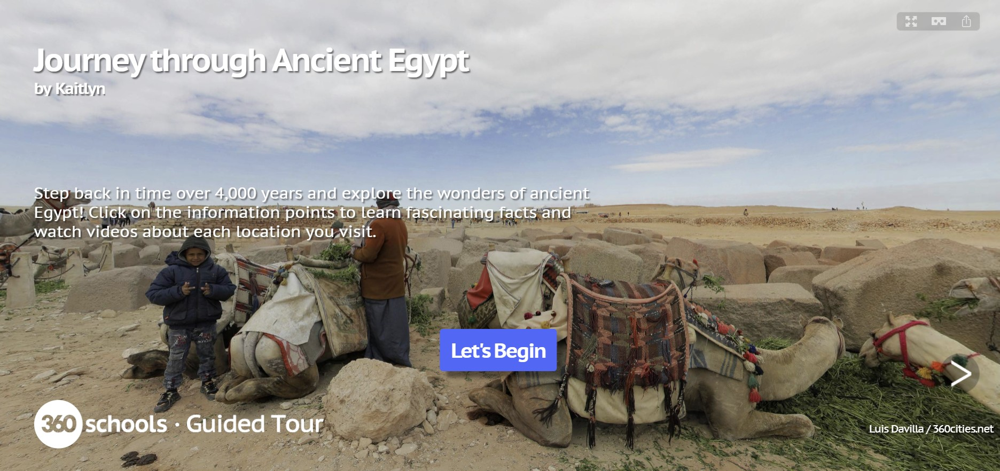

FeaturedJourney Through Ancient Egypt
This lesson, “Journey through Ancient Egypt,” is designed as a 5th-grade social studies lesson on Ancient Egypt. I designed my immersive learning element to serve as a virtual interactive tour of Ancient Egypt, transporting students not only to read facts about the key landmarks but to experience it in VR alongside text/video elements. I used 360° images from 360° Cities to guide students to travel to the following key landmarks: Giza Pyramids, the Great Sphinx, Luxor Temple, a spice market in Cairo, the Tomb of Renni, the Tomb of Ramses IV, Mushroom Rock, and the Nile River. This lesson transforms a traditional textbook lesson design into an engaging, hands-on, sensorial experience for students.
View Full Report →